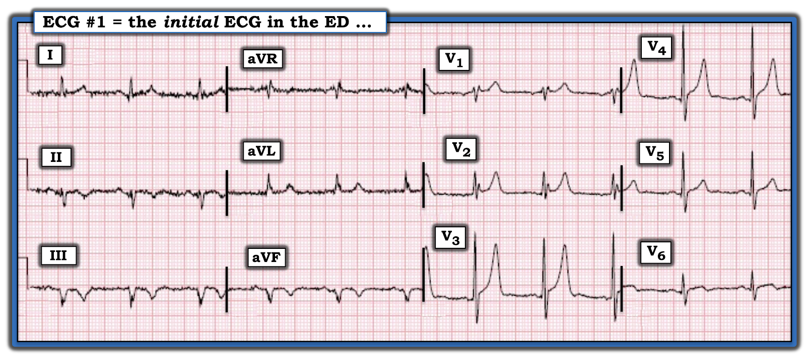
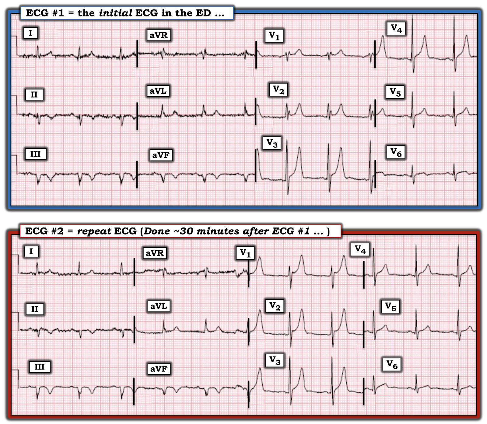
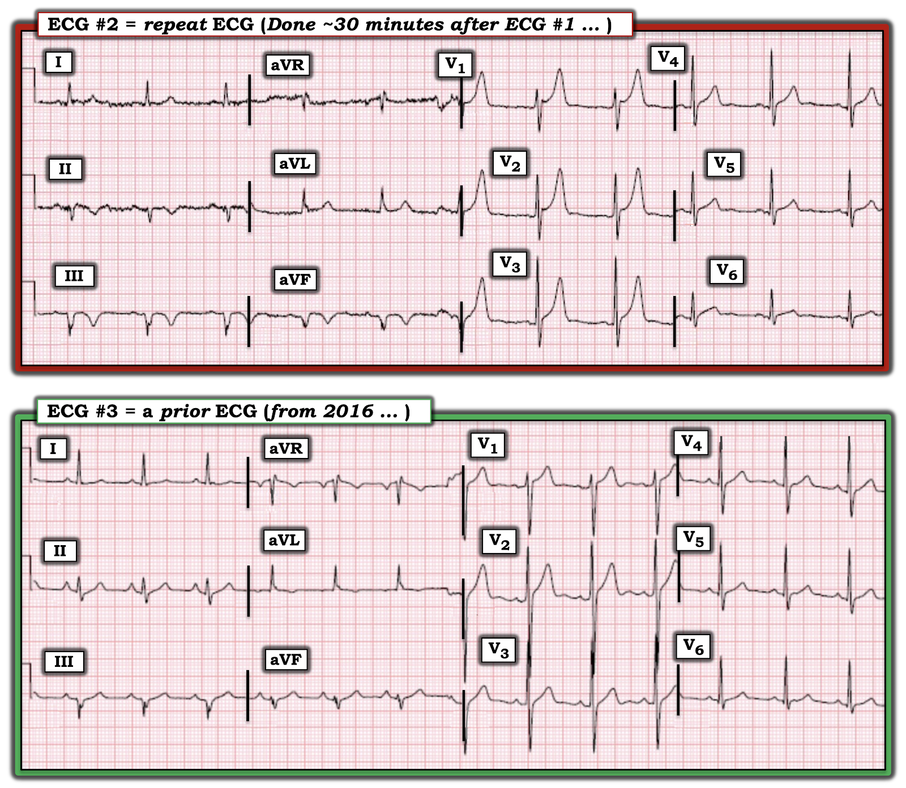
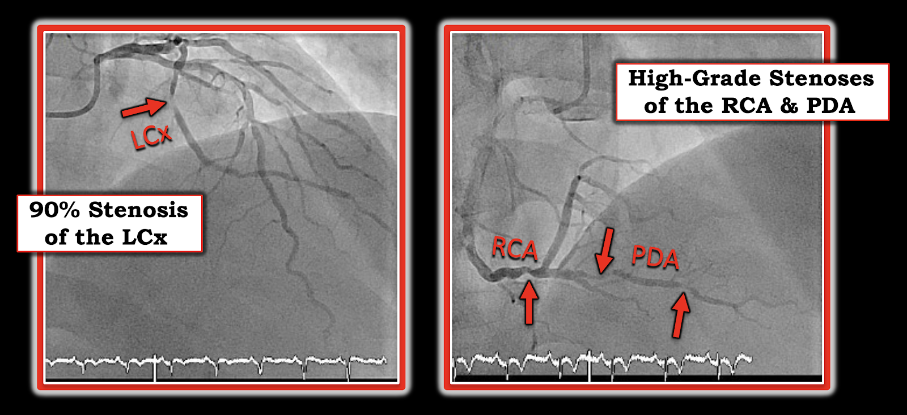

ECG Blog #341 — VÌ SAO sóng T lại nhọn?
Điện tâm đồ ở Hình-1 — được ghi từ một người đàn ông khoảng 60 tuổi, nhập viện sau một cơn ngất xảy ra trong nhà vệ sinh. Ông than có một cơn đau bụng ngắn vài tuần trước đó — nhưng không đau ngực. Ông ổn định huyết động vào thời điểm ghi điện tâm đồ ở Hình-1.
- BẠN sẽ đọc điện tâm đồ ban đầu của bệnh nhân này như thế nào?
- Các dấu hiệu trên điện tâm đồ có nhiều khả năng là do tăng kali máu (hyperkalemia) không?


SUY NGHĨ CỦA TÔI về điện tâm đồ #1:
Như mọi khi — tôi ưu tiên một cách tiếp cận hệ thống khi đọc điện tâm đồ 12 chuyển đạo (Xem ECG Blog #205).
- Có nhiễu (artifact) đáng kể — nhất là ở các chuyển đạo chi.
- Nhịp là nhịp xoang với tần số ~65-70/phút. Tất cả các khoảng (PR, QRS, QTc) có vẻ bình thường. Có LAD (trục lệch trái – Left Axis Deviation) rõ rệt — với nhiều nhất, không quá một sóng dương ban đầu rất nhỏ ở các chuyển đạo thành dưới.
- ĐIỂM THEN CHỐT (PEARL) #1: Dù khó chắc chắn vì nhiễu đường nền rõ rệt — có vẻ các phức bộ QRS ở các chuyển đạo thành dưới bị phân mảnh (tức là có khía). Sự kết hợp giữa QRS âm là chủ yếu + phân mảnh — gợi ý rằng ngoài LAHB (blốc phân nhánh trái trước – Left Anterior HemiBlock) — còn đã có nhồi máu vào một thời điểm nào đó.
Tiếp tục đánh giá một cách hệ thống:
- Không có lớn buồng tim.
Về Thay đổi Q-R-S-T:
- Sóng Q: Như đã nói — dù khó (vì nhiễu) xác định sóng QRS ban đầu ở các chuyển đạo thành dưới là dương hay âm (tức là sóng Q hay sóng r) — đây chỉ là khác biệt mang tính lý thuyết, vì QRS âm là chủ yếu kèm phân mảnh ở tất cả các chuyển đạo thành dưới ít nhất cũng đủ tiêu chuẩn là hình ảnh “tương đương sóng Q”.
- Tăng tiến sóng R (R Wave Progression): Có vùng chuyển tiếp sớm (R>S ngay từ chuyển đạo V2).
- ĐIỂM THEN CHỐT #2: BẠN có để ý hình ảnh rSr’ ở chuyển đạo V1 không? (và hình ảnh R-s-r’ ở chuyển đạo V2?). Dù có thể đây là dẫn truyền kiểu RBBB không hoàn toàn — việc thấy một sóng r’ cuối tương tự ở chuyển đạo aVR cùng với sóng P âm ở chuyển đạo V1 gợi ý rằng các điện cực V1 và V2 ở điện tâm đồ #1 có thể đã bị đặt quá cao trên ngực (Xem ECG Blog #274 để biết các manh mối giúp nhận ra nhanh việc đặt sai vị trí điện cực V1,V2). Điều này có liên quan đến ca hôm nay — vì thay đổi sóng T ở các chuyển đạo trước nổi bật đến mức nào!
Tiếp tục với Thay đổi S-T:
- Dấu hiệu đáng chú ý nhất ở điện tâm đồ #1 — là sự hiện diện của sóng T cao, nhọn và nhọn hoắt ở các chuyển đạo ngực phía trước. Dù hình dạng đối xứng, đáy hẹp và đỉnh cực nhọn của sóng T ở chuyển đạo V3 và V4 rõ ràng có thể phù hợp với tăng kali máu (và tôi chắc chắn sẽ muốn kiểm tra nồng độ K+ huyết thanh) — việc không có hình dạng cực đoan này ở phần lớn các chuyển đạo khác gợi ý nguyên nhân là một điều gì đó khác ngoài tăng kali máu.
- Vùng chuyển đạo đáng chú ý còn lại với thay đổi ST-T rõ là ở các chuyển đạo thành dưới — nơi các chuyển đạo II,III,aVF đều có đoạn ST dạng vòm (coving) (dù không có ST chênh lên) kèm sóng T đảo ngược đối xứng, sâu vừa phải.
Điện tâm đồ #1: Tổng Hợp Lại Tất cả:
Bệnh nhân trong ca hôm nay không đau ngực. Thay vào đó — ông nhập viện vì một cơn ngất xảy ra khi đang ở trong nhà vệ sinh. Bệnh nhân cũng kể có một cơn đau bụng vài tuần trước đó. Dù ít điển hình hơn — các triệu chứng này có thể là một biểu hiện khác của bệnh mạch vành gần đây hoặc cấp.
- Tôi có muốn loại trừ tăng kali máu — nhưng tôi cho rằng việc sóng T không nhọn lan tỏa hơn là điểm chống lại rối loạn điện giải này như lời giải thích đầy đủ cho các thay đổi ST-T trên bản ghi này.
- Sóng T nhọn ở chuyển đạo ngực (với sóng T khổng lồ cao >10 mm ở chuyển đạo V3,V4) có thể là một dạng sóng T kiểu de Winter (deWinter-like) do tắc động mạch vành LAD (động mạch liên thất trước – Left Anterior Descending) — NHƯNG — không có điểm J chênh xuống kèm ST của sóng T kiểu de Winter — các chuyển đạo có sóng T nhọn không “bầu hơn” ở đỉnh và rộng hơn ở đáy như điển hình của sóng T de Winter — và, thay vì ST chênh lên ở các chuyển đạo thành dưới, lại có sóng T đảo ngược đối xứng (Xem ECG Blog #183 — về khái niệm sóng T kiểu de Winter).
- Mặt khác, thay vì sóng T tối cấp thành trước — sóng T nhọn ở vùng các chuyển đạo ngực như trên có thể phản ánh tái tưới máu thành sau. Điều này sẽ phù hợp với sóng T đảo ngược đối xứng ở chuyển đạo II,III,aVF của điện tâm đồ #1, vốn có thể là thay đổi tái tưới máu thành dưới (Xem ECG Blog #266 — về cách phân biệt sóng T de Winter với nhồi máu cơ tim thành sau (Posterior MI)).
- ĐIỀU CỐT LÕI: Ban đầu tôi không chắc chắn về nguyên nhân của các thay đổi ST-T ở điện tâm đồ #1. Dù vậy, mặc dù bệnh nhân hôm nay không đến với đau ngực mới — ông có đến với các triệu chứng khác có thể phản ánh bệnh mạch vành gần đây hoặc cấp. Bất kể tôi chưa chắc về khả năng có và vị trí của một động mạch "thủ phạm" — các thay đổi ST-T ở điện tâm đồ #1 trông cấp tính!
Ca bệnh tiếp diễn:
Bệnh nhân vẫn ổn định huyết động. K+ huyết thanh bình thường ( = 4.5 mEq/L). Hai lần đo troponin cho giá trị tương tự, tăng nhẹ. Một điện tâm đồ thứ 2 được ghi 30 phút sau bản ghi ban đầu (Hình-2).
- BẠN thấy thay đổi gì (nếu có) trên điện tâm đồ ở điện tâm đồ #2?


Điện tâm đồ ghi lại:
Có một vài thay đổi tinh tế ở điện tâm đồ #2, so với bản ghi ban đầu. Cách tốt nhất để nhận ra các thay đổi này là so sánh từng chuyển đạo với chuyển đạo tương ứng của hai điện tâm đồ đặt cạnh nhau (như tôi đã làm ở Hình-2). Lưu ý các điểm sau:
- Hình dạng QRS và trục mặt phẳng trán là tương tự nhau ở cả hai điện tâm đồ trong Hình-2. Tuy nhiên, hình dạng QRS ở các chuyển đạo ngực lại khác! Lưu ý rằng sóng r' cuối có ở chuyển đạo V1 và V2 của điện tâm đồ #1 — không còn nữa ở điện tâm đồ #2. Ngoài ra — không còn sóng P âm ở chuyển đạo V1. Vì vậy — tôi nghi rằng việc đặt điện cực V1,V2 quá cao ở điện tâm đồ #1 đã được sửa lại ở điện tâm đồ #2. Điều này có liên quan — vì vị trí sóng T nhọn nhất đã dịch chuyển ra phía trước nhiều hơn ở điện tâm đồ #2.
- ĐIỀU CỐT LÕI: Tôi thấy khó xác định LIỆU có (hay không có) thay đổi đáng kể nào về hình dạng ST-T giữa 2 bản ghi ở Hình-2. Dù vậy — trong khi các phức bộ QRS chủ yếu âm và phân mảnh ở các chuyển đạo thành dưới có thể là biểu hiện của nhồi máu cũ — các sóng T cao, nhọn ở chuyển đạo ngực "trông" cấp tính — và cần giả định rằng chúng là cấp tính cho đến khi chứng minh được điều ngược lại!
Đã tìm được một điện tâm đồ cũ!
Hóa ra đã tìm được một điện tâm đồ "nền" trước đây từ năm 2016. Để dễ theo dõi — tôi đặt bản ghi cũ này cạnh điện tâm đồ #2 ở Hình-3.
- Bản ghi nền này giúp ÍCH GÌ cho việc hiểu trình tự thời gian có thể của các sự kiện trong ca hôm nay?


Điện tâm đồ cũ cho chúng ta biết gì:
Đã có một số thay đổi điện tâm đồ đáng kể trong 6 năm kể từ khi ghi điện tâm đồ cũ (2016). Gồm các điểm sau:
- Dù sự phân mảnh và QRS âm là chủ yếu ở chuyển đạo III và aVF đã có từ năm 2016 — một sóng R rõ ràng đã hiện diện ở chuyển đạo II của bản ghi nền. Sóng T ở cả 3 chuyển đạo thành dưới đều dương vào năm 2016, với nhiều nhất là điểm J chênh xuống tối thiểu. Điều này gợi ý rằng trong khi một lần nhồi máu thành dưới thứ 1 có thể đã "cũ" (chính là các phức bộ QRS phân mảnh, chủ yếu âm ở chuyển đạo III và aVF của điện tâm đồ #3) — thì việc mất sóng R ở chuyển đạo II, kèm sóng T đảo ngược đối xứng ở cả 3 chuyển đạo thành dưới của điện tâm đồ #2 là những dấu hiệu mới kể từ năm 2016!
- Vùng chuyển tiếp sớm với sóng R (cao gần 15 mm) nổi bật ngay ở chuyển đạo V2 đã có trên bản ghi 2016. Liệu sóng R cao này ở chuyển đạo V2 của bản ghi 2016 có phải là dấu hiệu của nhồi máu thành sau cũ hay không thì chưa chắc chắn khi xem xét bản ghi nền này.
- Hãy để ý sóng S ở chuyển đạo V2 của điện tâm đồ #3 sâu đến mức nào (tức là >20 mm, chồng lấn vào sóng R của chuyển đạo V3). Vì vậy — các sóng T thành trước cao (cao từ 5-10 mm) thấy trên bản ghi 2016 là không quá mức so với QRS. Điểm MẤU CHỐT: Việc xem bản ghi nền năm 2016 này giúp giải thích vì sao sóng T ở điện tâm đồ #2 lại cao đến thế (và nay lại nhọn đến thế). Đã có sự chồng thêm một thay đổi sóng T cấp tính lên trên những sóng T thành trước vốn trước đây đã khá cao.
Tổng Hợp câu chuyện từ Hình-1, -2 và -3:
- Không có tiền sử đau ngực trong ca hôm nay. Do đó — chúng ta thiếu một "manh mối" rất quan trọng về thời điểm xảy ra biến cố cấp (giả sử rằng hỏi lại bệnh nhân hôm nay cũng không gợi ra được thêm triệu chứng nào trong vài ngày đến vài tuần gần đây).
- Điểm chống lại một biến cố đang tiến triển cấp — là việc không có thay đổi đáng kể về hình dạng ST-T giữa điện tâm đồ #1 và #2 — cùng với việc 2 giá trị troponin cho kết quả tương tự nhau và chỉ tăng nhẹ trên mức bình thường.
- Có lẽ — đã xảy ra một biến cố gần đây, xét theo mức độ cao và nhọn của sóng T ở chuyển đạo ngực trên điện tâm đồ #2 (nhất là khi so với hình dạng không cấp tính của chúng trên bản ghi nền năm 2016).
- KẾT LUẬN: Từ những thông tin đã biết — tôi nghĩ lời giải thích hợp lý nhất cho các dấu hiệu điện tâm đồ mô tả ở trên — là điện tâm đồ #1 và #2 biểu hiện nhồi máu cơ tim dưới-sau gần đây (có lẽ đã xảy ra từ vài ngày đến 1-2 tuần trước) — với sóng T đảo ngược ở thành dưới và sóng T cao, nhọn ở thành trước là biểu hiện của thay đổi tái tưới máu tự phát.
Thông tim đã được thực hiện:
Chụp mạch vành thực hiện vài ngày sau đó — cho thấy bệnh mạch vành nhiều nhánh lan rộng (Hình-4).
- Thân chính của LAD thông. Có hẹp ~70% ở nhánh chéo thứ 1 của LAD.
- Có hẹp 90% khít ở LCx (động mạch mũ trái – Left Circumflex). Đây được cho là động mạch "thủ phạm" gây ra biến cố gần đây của bệnh nhân.
- Có hẹp 80% ở đoạn xa RCA (động mạch vành phải – Right Coronary Artery).
- Có hai chỗ hẹp ~80% ở PDA (động mạch liên thất sau – Posterior Descending Artery).


Bài Học Rút Ra:
- Bệnh nhiều nhánh mạch vành thường có thể giải thích những dấu hiệu điện tâm đồ bất thường (ban đầu tôi không chắc về tổn thương thủ phạm khi xem điện tâm đồ đầu tiên của ca hôm nay).
- Không phải mọi bệnh nhân nhồi máu cơ tim cấp (hoặc gần đây) đều đau ngực (Xem ECG Blog #228 — trong đó có một Audio Pearl về chủ đề này). Trong số các triệu chứng không phải đau ngực liên quan đến nhồi máu cơ tim "thầm lặng" có ngất và đau bụng (cả hai đều có trong ca hôm nay).
- Sóng T kiểu de Winter của tắc cấp LAD so với sóng T cao ở thành trước do tái tưới máu thành sau — đôi khi có thể rất khó phân biệt với nhau.
- Bất kể nguyên nhân và trình tự chính xác của các sự kiện trong ca hôm nay — các thay đổi ST-T trên điện tâm đồ ban đầu rõ ràng là cấp tính, cần được khảo sát ngay.
- Bệnh sử thường là MẤU CHỐT để giải thích những ca phức tạp như ca này (cơn đau bụng ngắn gần đây có thể là triệu chứng tương đương không phải đau ngực của "nhồi máu cơ tim thầm lặng", giải thích được mọi khía cạnh của ca hôm nay).
==================================
LỜI CẢM ƠN: Xin cảm ơn 林柏志 (đến từ Đài Loan) đã chia sẻ ca bệnh và bản ghi này.
==================================
Các bài ECG Blog liên quan đến ca hôm nay:
- ECG Blog #205 — Ôn lại Cách tiếp cận hệ thống của tôi khi đọc điện tâm đồ 12 chuyển đạo (trình bày ở Hình-2 và -3, và là chủ đề của Audio Pearl MP-23 trong Blog #205).
- ECG Blog #193 — minh họa cách dùng nghiệm pháp soi gương (Mirror Test) để dễ nhận ra nhồi máu cơ tim thành sau cấp. Bài này ôn lại những điều cơ bản để dự đoán động mạch "thủ phạm". LƯU Ý: Pearl Audio ôn lại lý do vì sao thuật ngữ "OMI" ( = nhồi máu cơ tim do tắc – Occlusion-based MI) nên thay thế cho thuật ngữ quen thuộc hơn là STEMI.
- ECG Blog #194 — Ôn lại cách nhận biết LIỆU động mạch “thủ phạm” (tức là bị tắc cấp) đã được tái tưới máu hay chưa dựa vào dữ kiện lâm sàng và điện tâm đồ.
- ECG Blog #80 — Ôn lại cách xác định động mạch "thủ phạm" và áp dụng nghiệm pháp soi gương (Mirror Test) để nhận ra nhồi máu cơ tim thành sau cấp.
- ECG Blog #248 — Ôn lại một ca minh họa các nguyên nhân gây sóng R cao ở chuyển đạo V1 (với Audio Pearl trong bài này dành riêng cho chủ đề này).
- ECG Blog #184 — minh họa mối quan hệ đối nghịch như hình ảnh soi gương "kỳ diệu" khi thiếu máu cục bộ cấp giữa chuyển đạo III và chuyển đạo aVL (được trình bày trong Audio Pearl #2 của bài này).
- ECG Blog #262 — Ôn lại một ca nhồi máu cơ tim dưới-sau cấp gần đây với nhịp theo nhóm do dẫn truyền Wenckebach và điện thế thấp (kèm danh sách các nguyên nhân gây điện thế thấp).
- ECG Blog #266 — Ôn lại một số điểm cần cân nhắc khi phân biệt sóng T de Winter với nhồi máu cơ tim thành sau.
- ECG Blog #183 — Ôn lại một ca sóng T de Winter (với Audio Pearl trong bài này bàn về một số biến thể của hình ảnh sóng T de Winter).
- ECG Blog #53 — Ôn lại một ca khác về sóng T de Winter.
- ECG Blog #318 — Trình bày thêm một biến thể khác của sóng T kiểu de Winter — và — Ôn lại (và minh họa) khái niệm T-QRS-D (biến dạng phần cuối QRS – Terminal-QRS-Distortion).
- ECG Blog #215 — Ôn lại một ca có T-QRS-D.
- ECG Blog #340 — Ôn lại thêm một biến thể nữa của sóng T kiểu de Winter (với đoạn ST dốc xuống và sóng J do thiếu máu cục bộ).
- ECG Blog #218 — Ôn lại CÁCH xác định một sóng T là tối cấp?
- ECG Blog #230 — Ôn lại CÁCH so sánh các điện tâm đồ liên tiếp (tức là "Bạn đang so táo với táo hay táo với cam?").
- Bài ngày 22 tháng 11 năm 2019 trên Dr. Smith's ECG Blog (Vui lòng cuộn xuống CUỐI trang để xem Bình luận của tôi về sóng Osborn do thiếu máu cục bộ ).
- ECG Blog #274 — Ôn lại khái niệm tăng tiến sóng R (và cách nhận ra nhanh việc đặt sai vị trí điện cực V1,V2).